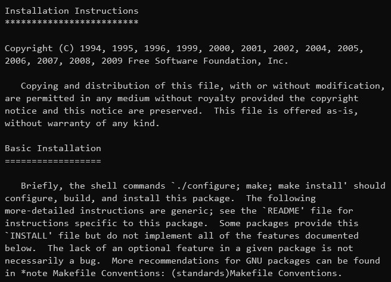
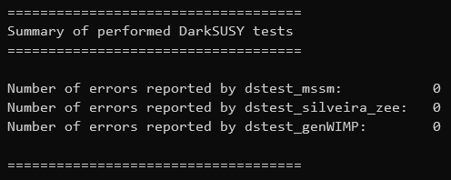

DarkSUSY 是一个灵活且模块化的 Fortran 封装软件包，用于计算各种暗物质候选物的可观测物质。
使用DarkSUSY 可以准确预测多种天体的暗物质信号，例如低背景计数实验中的直接探测速率、来自银河光环的反质子、伽马射线、正电子和来自地球或太阳的高能中微子信号。对于像这样的热产生的暗物质，darksusy为计算当今宇宙中WIMPs的遗迹密度和最小暗物质本体的提供了高精度的工具。
GNU（GNU Not Unix）是由理查德·斯托曼发起的自由软件项目，它提供了编译器、库文件和各种应用程序，是构成自由软件世界的重要支撑。
由于Linux使用了太多太多的GNU组件，所以理查德·斯托曼坚定地称之为GNU/Linux。
一般而言，你得到一个符合GNU规范的软件包，都会在其中看到 INSTALL 文件，文件里面通常是下面这样：
根据INSTALL文件，我们可以看到，一般安装方法就是：
./configure
make
(sudo) make install
尽管darksusy没有GNU规范的INSTALL文件，但是其README.INSTALL文件起着同样的作用，darksusy可算是这里几个软件里最好安装的了
和上面介绍的一样，具体步骤如下：
./configure
make
sudo make install
如果没有ROOT权限，那么可以通过制定路径安装：./configure --prefix=/where/you/can/install
make
make install
成功安装之后，可以使用其自带的例子做验证是否成功安装：
cd darksusy/example/test
./dstest
如果出现下面这幅图，说明安装成功
恭喜！
留白也是艺术
有请余涛来谈谈
赵问问：
邮箱：zhaoww2013@126.com ; zhaoww1998@outlook.com
余涛:
邮箱：